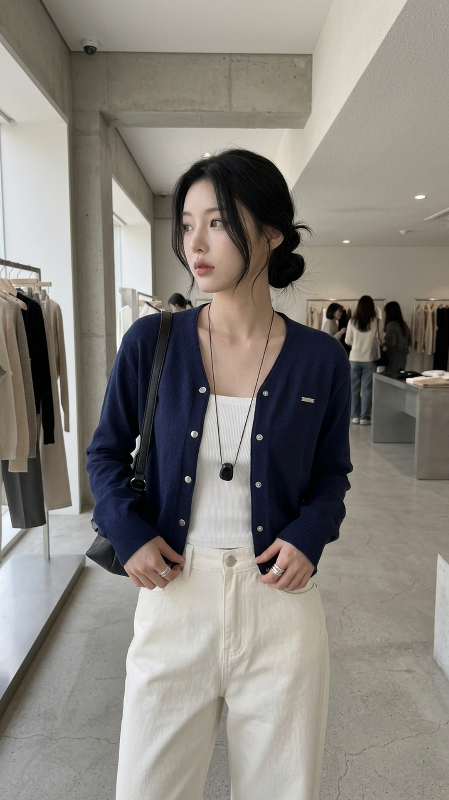
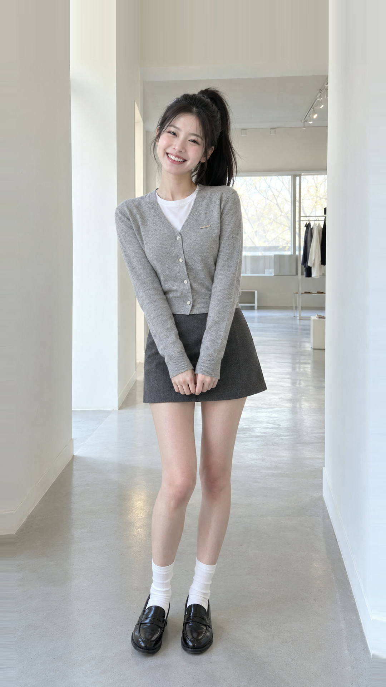
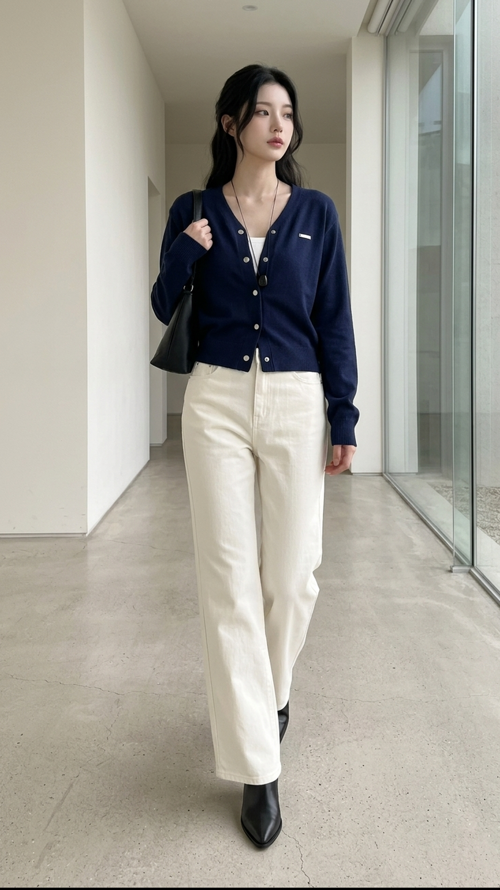

@muse.fit.kr 릴스 02 — 오브넬 마틴 브이넥 스냅 펜던트 가디건 (6컷 마스터 검수본)
전체 6컷(메인 룩북 3컷 + 158cm/163cm/169cm 키별 코디 비교 3컷) 합본 마스터 영상과 개별 컷을 바로 재생해 보실 수 있습니다.
🎬 릴스 02 최종 통합 마스터 영상 (18.4초 · BGM & 키 오버레이 포함)

시작 키프레임 (reel02_k01.png)
🎬 1080p 렌더링 컷 [MP4 다운로드]
Cut 01 (0.0~3.5s) · 메인 훅 & 실버 스냅 펜던트 클로즈업
169cm 메인 모델 구간 (고개 숙인 올림머리 키프레임 → Veo가 고개 들 때 임의 얼굴 생성됨)
시작 키프레임 (reel02_k02.png)
🎬 1080p 렌더링 컷 [MP4 다운로드]
Cut 02 (3.5~7.0s) · 쇼룸 하프 샷 워킹 & 핏 체크
169cm 메인 모델 구간 (정본 반묶음 웨이브 대신 생머리로 생성되어 인상이 달라 보임)

시작 키프레임 (reel02_k03.png)
🎬 1080p 렌더링 컷 [MP4 다운로드]
Cut 03 (7.0~10.5s) · 네이비 컬러 & 아이보리 팬츠 투웨이 연출
169cm 메인 모델 구간 (로우번 묶음머리 + 측면 시선으로 정본과 다른 인상)

시작 키프레임 (reel02_k04_158cm.png)
🎬 1080p 렌더링 컷 [MP4 다운로드]
Cut 04 (10.5~13.1s) · [키 비교 1] 158cm 모델 코디 & 체형 비교
158cm 모델 (과즙 미소 + 하이 포니테일 · 미니스커트 & 삭스 코디 · Guide 1 오버레이)

시작 키프레임 (reel02_k05_163cm.png)
🎬 1080p 렌더링 컷 [MP4 다운로드]
Cut 05 (13.1~15.7s) · [키 비교 2] 163cm 모델 코디 & 체형 비교
163cm 모델 (무쌍 시크 여우상 + 중단발 허쉬컷 · 와이드 데님 코디 · Guide 1 오버레이)

시작 키프레임 (reel02_k06_169cm.png)
🎬 1080p 렌더링 컷 [MP4 다운로드]
Cut 06 (15.7~18.4s) · [키 비교 3] 169cm 모델 코디 & 체형 비교
169cm 모델 (네이비 가디건 & 크림 와이드 팬츠 · 전신 소형 얼굴 + 측면 시선으로 이목구비 차이 발생)